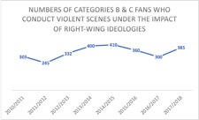
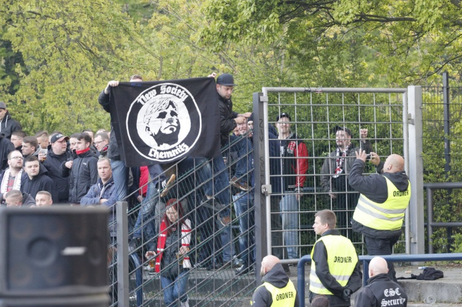
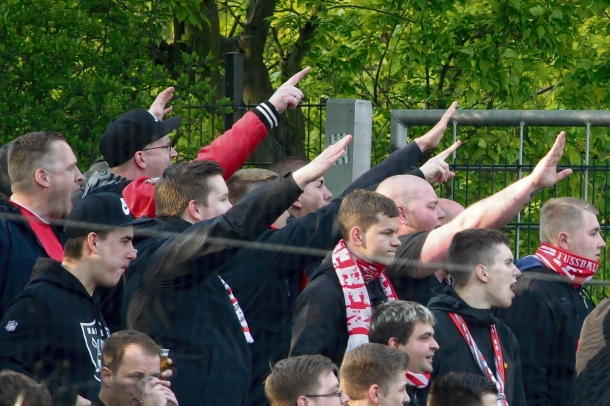
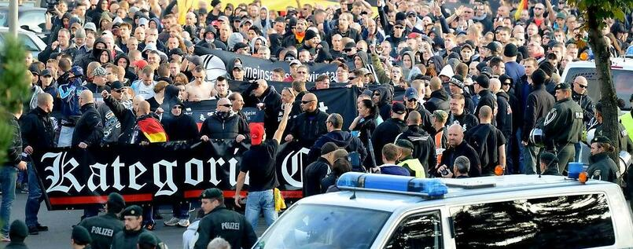
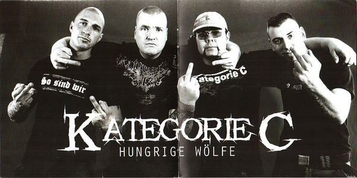

If we want to examine the perception of multiculturalism from the regional level, it is essential to view the bahaviors of certain fan groups who hold hostile attitude towards players, other fans, and public. Here I intend to approach to the perception through the lens of hooliganism. In October 1982, a 16-year-old Hamburg football fan was killed by a stone thrown by Bremen fans. Three years later, 39 people lost their lives, and 600 people were injured in a confrontation between Juventus and Liverpool in England. Tragedies such as these led to the formation of special police forces in all Bundesliga cities (the German soccer league) with task of separating the violent fans from others. However, the suppression of the physical clashes inside the stadium led to the increase of organized violence against foreigners and other bystanders outside of the stadium. The authorities tried to reinforce the control of fan groups to avoid injuries and deaths. This behavior set the hooligans on the opposite of the authorities which triggered hooligans to form and strengthen their organizations.
There are various types of fans in German football culture. Since the subgroups inside the fan population overlap with each other, hooligans and ultras are often mentioned together in the mass media. Those who support their football club in an ultra-fanatical way are categorized as the ultras. Chanting, singing, using flares, drums, and banners, and occasionally violent conflicts with rival supporters are the typical ways for them to show support of their clubs (Perasović and Mustapić 961). As the largest young subculture group in Germany, the ultras get the most attention from the mass media. They often leave the public the impression of crazy football fans who are notorious troublemakers. The public tend to think hooliganism is one of the essential characteristics of the ultras. However, as Jonas Gabler who studies fan culture pointed out, “Hooligans take sports as a platform to conduct violence and they are not interested in sport itself. Ultra-fans are opposite of that (Gabler 2000).”
One of the most distinctive characteristics of hooligans is that they derive utility from fighting (Leeson et al.). Being able to pick a fight with other people is the main reason they go to football games. For hooligans, fights surrounding football rivalries are a central part of the sport, or even a sport itself (Leeson et al.). In 2017, Deutsche Welle published a short documentary named “Hooligans in Frankfurt: Fans or fighters? (off!, DW Kick, 2017)” Reporter Kres Harrington asked a few hooligans and tried to find out why they go into battle. Harrington asked, “do you love to fight for your team or do you simply just love to fight?” He received answers such as “this is… uh… kind of for myself and for the team”, “Ich kämpfe um zu kämpfen. (I fight in order to fight.) (05:38)” These answers further prove at least some hooligans enjoy fighting and believe fighting is a source of utility.
In addition, the Zentrale Informationsstelle Sporteinsätze (ZIS) in Germany creates three categories in order to separate different fan groups based on their behaviors: category A, the “friedliche fan”; category B, the “gewaltbereite/-geneigte fan”; category C, the “gewaltsuchende” fan. As ZIS explains, most ultra-groups are considered part of the category A (“Ultragruppierungen mit choreographischen Inszenierungen fallen in der Regel in die Kategorie A.”). And the hooligans are categorized to B and C. In the ZIS annual reports from football season 2010/2011 to 2017/2018, the number of violent scenes conducted by categories B & C fans under the impact of right-wing ideologies is at least two times higher than the scenes under left-wing ideologies. The number of the hooligans who conducted violent scenes under the right-wing ideologies is also at least two times higher than the supporter of the other side. There is an obvious rise around 2014/2015 season, from at lowest 245 people to 410 people. After two years of constantly declining, the number went back up to 385 in the past season. The data from the ZIS proves that there are people within the hooligan groups particularly prefer to conduct violent crimes under the right-wing ideologies.

In the annual ZIS report, the Landesamt für Zentrale Polizeiliche Dienste (LZPD) carefully described the scenes as “politisch rechtsmotiviert.” Since January 1st 2001, the term “politisch rechtsmotiviert” was defined as “wenn Bezüge zu völkischem Nationalismus, Rassismus, Sozialdarwinismus oder Nationalsozialismus ganz oder teilweise ursächlich für die Tatbegehung waren (Feustel 147).” Ideologies such as “völkischer Nationalismus”, “Rassismus”, “Nationalsozialismus” all belong to the far-right ideologies, which again proves that far-right ideologies are preferred by the hooligans.
However, is violence the only criterion to categorize hooligans and understand hooliganism? Or do other aspects play a role in hooliganism? I argue here today that there is a spectrum of hooliganism ranging between football-related violence, as we saw above, to right-wing propaganda. Here I will present three case studies that depict various types of hooligans activities in the contemporary German football fandom.

The first image we see here is of the “NS-boys” which is a subgroup from the fan group Ultras Chemnitz 99. “NS” stands for “New Society.” This name also alludes to “National Socialism” or Nazism. The logo of this group is a Hitler Youth group member from a propaganda poster of the 1930s.

Another famous hooligan fan group that strongly associated with Nazism is Cottbus Inferno. Hooligan fans from this group interrupted multiple games in the past several years. In 2017, during the derby game with another team, SV Babelsberg 03, their fans even yelled “Arbeit macht frei, Babelberg null drei,” as a slogan for boosting morale. “Arbeit macht frei” is a German phrase meaning “work sets you free”, known for appearing on the entrance of Auschwitz and other Nazi concentration camps.If we take a look at the pictures that are taken during the games, it’s not hard to see that Hitler salute is relatively common among these scenes.

In contrast, a separate fan group that gained prominence in 2014 has more supporters and has caused social disturbance due to its extreme right-wing ideologies-oriented demonstration – Hooligans gegen Salafisten. Hooligans gegen Salafisten (HoGeSa) as one of the most wellknown hooligan groups, was originally formed by football hooligans in 2014 first through Facebook. The intention of this group is to call out various football hooligans to put aside their rival feelings towards each other and start to face the common enemy, the Salafist, or even more specific, Islamism.

Finally, in this picture, the banner “Kategorie C” is particularly insightful. “Kategorie C” is both a band’s name as well as the name German agency use to categorize the hooligan fans. In the 2000, this German band is listed as a “Hooligan-Band”. The reason is that they consistently write songs for the right-wing extremist hooligan groups. As we can see in this picture, the singer of Kategorie C openly use Nazi salutes during his performance.
From the description of the four groups, we can see the differences between various forms of hooliganism in Germany. NS-boys and Cottbus Inferno are both strongly linked to neo-Nazi ideology and identity. They openly express their support towards Nazism through their violent behaviors, including verbally insulting their opponents, bursting into the play field, picking fights with police, etc. The use of Nazism provides them a sense of belongings. The Nazi ideologies make them think whatever they are doing has a deeper meaning.
In contrast, HogeSa is no longer satisfied with conducting violence inside the stadium during the game time. Instead, it gathers football fans from various clubs and shifts its target to one certain group: immigrants. It also received support from other right-wing extremist movements, such as Pegida (Patriotic Europeans Against the Islamisation of Occident).
Finally, the hooligan-band Kategorie C turns hooliganism into personal identity. The band and its followers are proud of being hooligans and advertising their identity not through violence but a musical form to reach to a broader audience and spread right-wing extreme ideologies.
In the ZIS annual reports from football season 2010/2011 to 2017/2018, the number of violent scenes conducted by categories B & C fans under the impact of right-wing ideologies is at least two times higher than the scenes under left-wing ideologies. It is clear that hooliganism is tied to right-wing extremism and is on the rise, meaning that understanding its nuance and variation is of the utmost importance. Therefore, we cannot simply put all the hooligans in one box, namely violence, without further analysis. It is essential to realize that there is a spectrum of hooliganism ranging between football-related violence and right-wing ideal propaganda.
References
Feustel, Susanne. “Tendenziell tendenziös.” Ordnung. Macht. Extremismus: Effekte und Alternativen des Extremismus-Modells, VS Verlag für Sozialwissenschaften, 2011, pp. 143–62.
Gabler, Jonas. Die Ultras – Fußballfans Und Fußballkulturen in Deutschland. Papyrossa Verlag, 2000.
Leeson, Peter T., et al. “Hooligans*/Hooligans.” Revue d’Économie Politique; Paris, no. 2, Apr. 2012, pp. 213–31.
Mieriņa, Inta, and Ilze Koroļeva. “Support for Far Right Ideology and Anti-Migrant Attitudes among Youth in Europe: A Comparative Analysis.” The Sociological Review, vol. 63, no. 2_suppl, Dec. 2015, pp. 183–205.
Mudde, Cas. “Right-Wing Extremism Analyzed.” European Journal of Political Research, vol. 27, no. 2, Feb. 1995, pp. 203–24.
Mudde, Cas. The Ideology of the Extreme Right. 2000.
Perasović, Benjamin, and Marko Mustapić. “Carnival Supporters, Hooligans, and the ‘Against Modern Football’ Movement: Life within the Ultras Subculture in the Croatian Context.” Sport in Society, vol. 21, no. 6, June 2018, pp. 960–76.